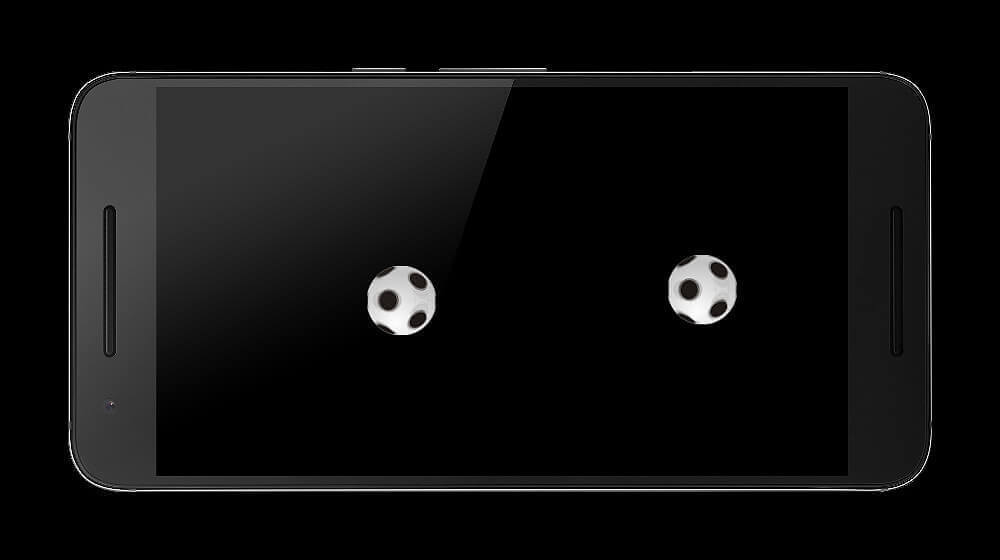
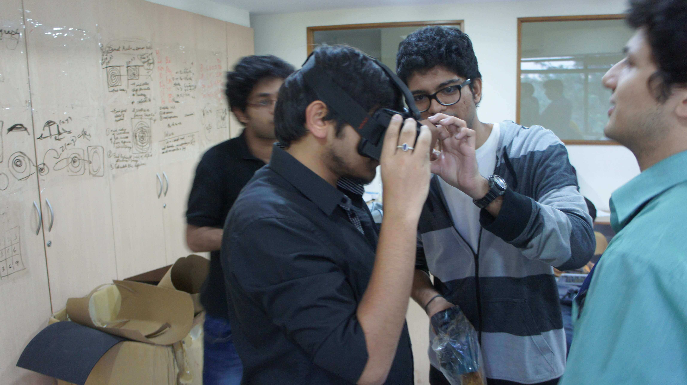

Tech Stack
A Device To Track Pupil Of The Eye
Similar to StereoCam, Pupil tracker was built as a part of the internship I did at Srujana Center Of Innovation, Hyderabad in collaboration with MIT Media Labs. As the name says, Pupil Tracker is a hardware prototype developed to track the pupil of a human eye.
The project consisted of two teams - electrical engineering team and a software engineering team.
- The electrical engineering team built a prototype similar to that of Google cardboard. The hardware module consisted of an HD Webcam, infrared lights, and an android smartphone.
- The software engineering team built a computer application in Open CV which would track the pupil and record its data.
I built an android application which is composed of a football image, moving in a specific pattern in synchronized stereoscopic views. For building the application I made the use of Cardboard SDK to display 3D stereoscopic scenes with binocular rendering. In order to achieve synchronous motion animation I used Bitmap Drawable image and drew it on canvas. I used Android Scale Animation with bounce interpolator to achieve the bouncing animation of two images in a single plane.
Pupil Tracker In Action

